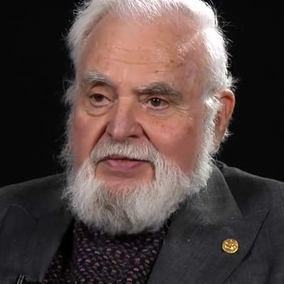
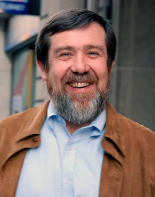
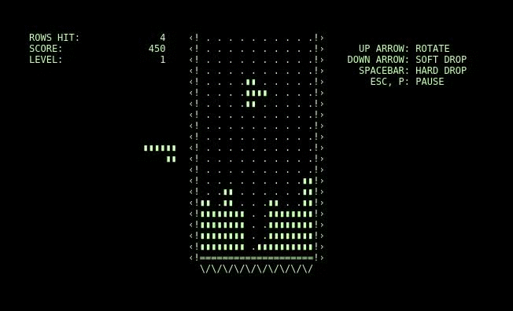

Welcome to Squarus!
Just 4 equal sides are needed to make a square. On its own, the humble square may seem plain, but by simply copying the square and connecting the copy to its original, one or more times, you can make an infinite variety of special shapes.

These connected-square shapes are called "polyominoes," a name given to them by mathematician Solomon Golomb in the early 20th century. Most people know the two-square polyomino or "domino," even if they've never heard of the shapes that have more than two squares. The next most famous polyomino is, of course, the four-squared shape or "tetromino", which most of the world knows as the "Tetris brick."

Polyominoes have long been a rich source of mathematical puzzles, but when Alexey Pajitnov created Tetris - a sort of undercover personal project he coded while working for the Soviet government's "ELORG" electronics institution, using the obscure and limited Electronicka 60 computer - he turned the tetromino into a worldwide cultural phenomenon.
Tetris itself requires the player to continually solve what is known in mathematics as an "Exact Cover" problem, the problem of trying to figure out how you can use a set of tile-able shapes to exactly cover a particular shape. in Tetris' case that shape is a row or set of rows, a rectangle really, whose size can grow but only as long as it remains smaller than the large rectangle or "well" into which the tetrominos continually fall.
In Squarus, you can choose polyomino families by their square count, and play with how those pieces can be arranged using different layout strategies such as trying to fill a circle or a spiral (as opposed to Tetris' continual rectangles within a rectangle).
Figuring out how many polyominoes exist for a given number of squares, how and which sshapes can be exactly covered by differing sets of them, and more are areas of active research that mathemeticians are still investigating even today!
